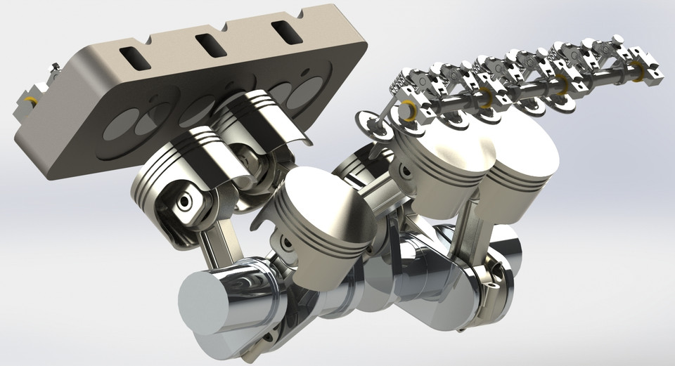
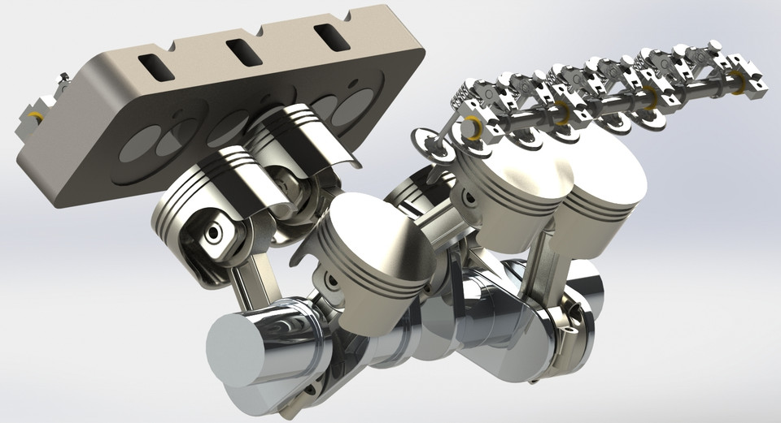

V6 Engine CAD Practice Project
This is a V6 engine assembly that was developed through my practice in CAD using SolidWorks. This was aimed at knowing complex multi-part assemblies, enhance model organization, and get to know how part interactions work.
The industry design of the V6 engine was created with the goal of providing a smooth, compact engine layout. Its high performance made it possible to be installed in more cars than a long inline-6 while still performing better than an inline-4.
Simulating this engine provided me with exposure to actual engineering limitations including clearances, kinematics, gear motion, and complete assembly rendering.
Render Images
 
← Back to Portfolio

← Back to Portfolio